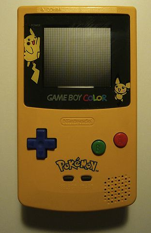

Yosemite National Park is located in central California. It is a World Heritage Site and has over 4 million visitors every year. Yosemite has beautiful granite cliffs, waterfalls, sequoia groves, hiking trails, and biological diversity. One of its most popular attractions is Half Dome, which people can hike and climb up.
Photo by David Iliff on Wikimedia Commons. License: CC BY-SA 3.0
Photo by Nicholas Dench from FreeImages
Photo by Benjamin Thorn from FreeImages
Photo by Joe Carey from FreeImages
Photo by mentatdgt from Pexels
Photo by Xabi Vazquez from Wikimedia
Prep time: 35 minutes | Cook Time: 25 minutes | Serves: 12
3 and 2/3 cups (420g) cake flour
1 teaspoon salt
1 teaspoon baking powder
1 and 1/2 cups (345g) unsalted butter
2 cups (400g) sugar
3 eggs
1 tablespoon vanilla extract